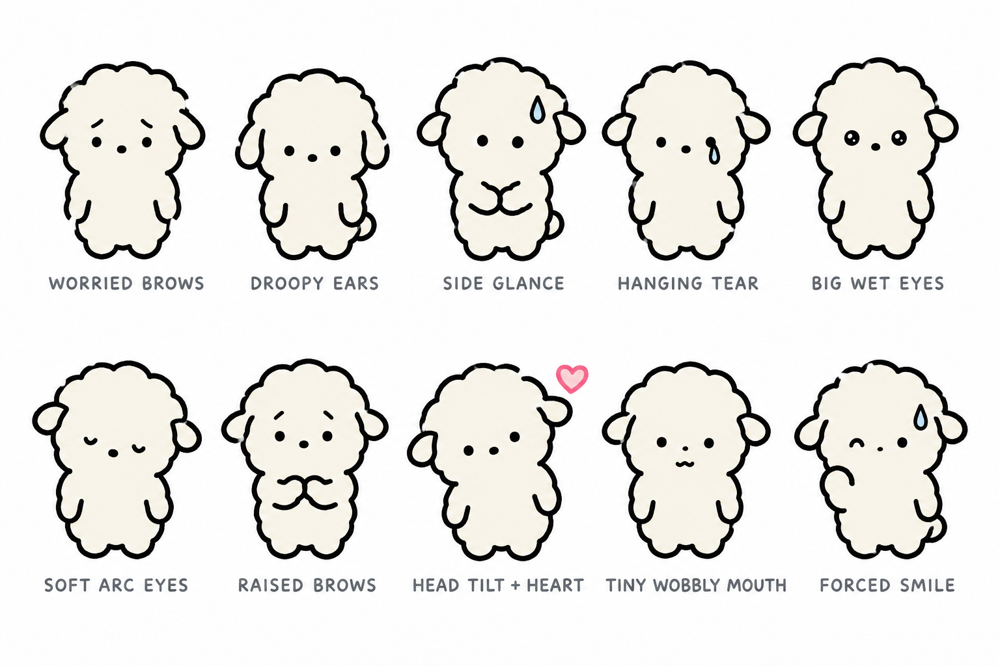

두부 기본 표정 컨셉 10안
현재 시트의 무표정(점 눈·입 없음)이 성격(눈치·걱정·거절 못함·잘 욺·마음 읽기)을 못 담는다는 지적에 따른 기본 표정 후보. 몸·색·외곽은 그대로, 눈·눈썹·귀·자세·기호만 바꿈. medium · 1536×1024 · 프롬프트: dubu-face-concepts-prompt.txt

- WORRIED BROWS — 점 눈 + 안쪽이 올라간 걱정 눈썹, 귀 살짝 처짐
- DROOPY EARS — 눈은 그대로, 귀가 아래로 축 늘어지고 어깨 움츠림
- SIDE GLANCE — 눈 둘 다 한쪽으로 쏠림(눈치), 땀방울, 손 모음
- HANGING TEAR — 한쪽 눈가에 떨어지지 않는 눈물 한 방울 상시
- BIG WET EYES — 눈 약간 크고 하이라이트 점, 울기 직전 글썽
- SOFT ARC EYES — 아래로 휜 작은 호 눈(반쯤 감김), 고개 갸웃
- RAISED BROWS — 눈썹이 눈 위로 높이 떠 있음(늘 미안한 얼굴), 가슴 앞 손 모음
- HEAD TILT + HEART — 고개 갸웃 + 귀 옆 작은 하트(남의 마음을 읽는 중)
- TINY WOBBLY MOUTH — 유일하게 입 있음. 작은 물결 입, 말하려다 못 함 (현재 "입 없음" 규칙 예외)
- FORCED SMILE — 한쪽 눈만 웃는 호, 땀방울, 어색한 손 인사(사회생활용)